This portfolio serves as a comprehensive record of my practical experience, technical competencies, and creative developments. Please use a desktop-based machine for the best experience.
Quick-Summary:
Enriko Straubis
16 years of age
Preferred career role: 3D Interior Design & Video Game Technical Design
Applied to: BTEC L2 Art & Design
Visual Highlights
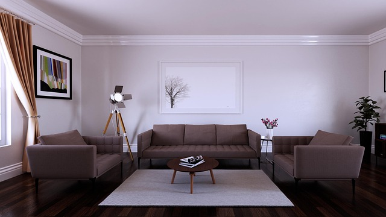
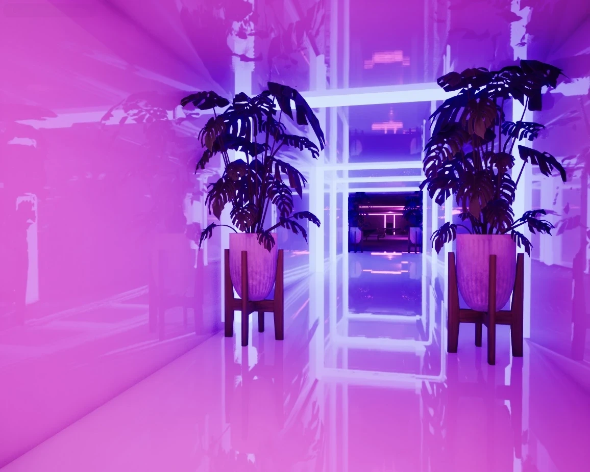
Inspirations & Learning Assets
My foundational interest in interactive digital environments began in my early teens through tactical simulations such as Tom Clancy's Rainbow Six Siege. Initially engaging as an end-user, my perspective shifted toward backend development and systems architecture as my programming proficiencies matured.
I began critically analyzing environment design—specifically, asking whether asset quality could be strictly optimized for User Experience (UX) without compromising visual fidelity, and how the spatial orientation of in-game props dictates user interaction. To expand my technical understanding, I studied the methodologies of industry-focused developers, notably @SebastianLague and @DevDuck.
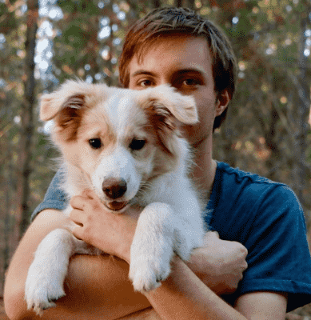
@SebastianLague

@DevDuck
These developers were recommended by academic peers for their technical rigor, graphical fidelity, and transparent breakdowns of complex rendering pipelines. Integrating their methodologies into my own learning process was instrumental in bridging the gap between theoretical programming and practical application.
However, the primary catalyst for my current trajectory was the tactical simulator Ready or Not. I was deeply fascinated by the developers' ability to optimize heavily AI-dependent systems while maintaining photorealistic environments and seamless performance that mirrors real-life scenarios.
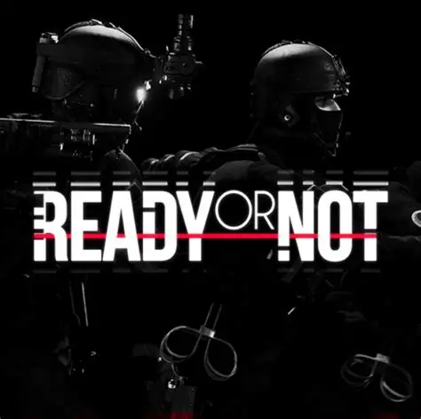
Ready or Not
Technical & Architectural Inspiration
This analytical study culminated in the development of my own architectural and technical project, CallSignDJ. It synthesizes the technical optimization strategies I researched and applies them to an entirely original, custom-built setting.
View Project: CallSignDJ
Projects & Works
This section details my applied technical expertise and practical portfolio. While I possess functional proficiency across various industry-standard 3D modeling pipelines (including specialized CAD applications, Blender, Autodesk Maya, and 3ds Max), my primary specialization is comprehensive, full-stack game development.
CallSignDJ (001)
Developed actively within Unreal Engine 5 utilizing a hybrid architecture of C++ and Blueprint visual scripting to provide logic and structural optimization, CallSignDJ (001) is a tactical simulation heavily inspired by the technical frameworks of Ready or Not.
Narrative & Architecture: Set against a geopolitical backdrop of global hostility in 2029, the narrative centers on the formation of the United Nations Military Operations Command (UNMOC). The user assumes the role of Sgt. M. Grayves, a pivotal operative within the Special Surveillance and Reconnaissance Regiment (Team-OC-BOG; Callsign-DJ, Designation: 254-00-34-UN-MOc2, Section 2:1 SpecOps).
The core objective is the mitigation of global tension through dynamic, multi-faceted operational branches:
- Peacekeeping Operations
- Emergency Government Support
- Direct Action
- Comprehensive Intelligence (SIGINT, HUMINT)
- Critical Counter-Terrorism
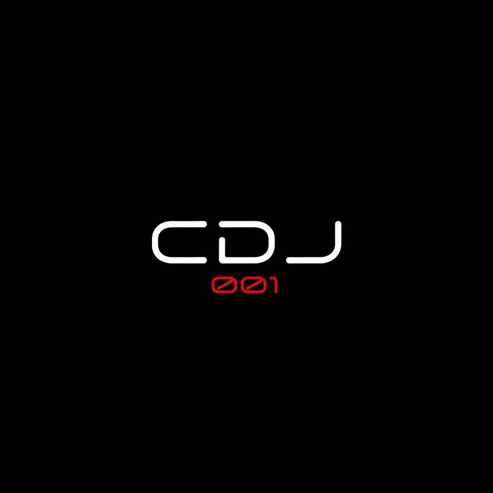
Damn You, Manager!
Damn You, Manager! (DYM!) was conceptualized as a first-person simulation juxtaposing stylized, cartoonish mechanics against a photorealistic nightclub environment. The project was ultimately archived due to a critical analysis of its structural limitations regarding long-term mechanical scaling and project scope.
Conceptual Framework: The simulation placed the user as Dan Brockner, a 19-year-old newly appointed nighttime manager at 'Paradi' nightclub. The core loop involved executing daily operational duties and managing unpredictable customer behavior.
The design pipeline scaled the difficulty over a simulated day. Successful completion of tiered quests rewarded the player with vertical progression, moving them to increasingly sophisticated and complex upper-floor management scenarios.
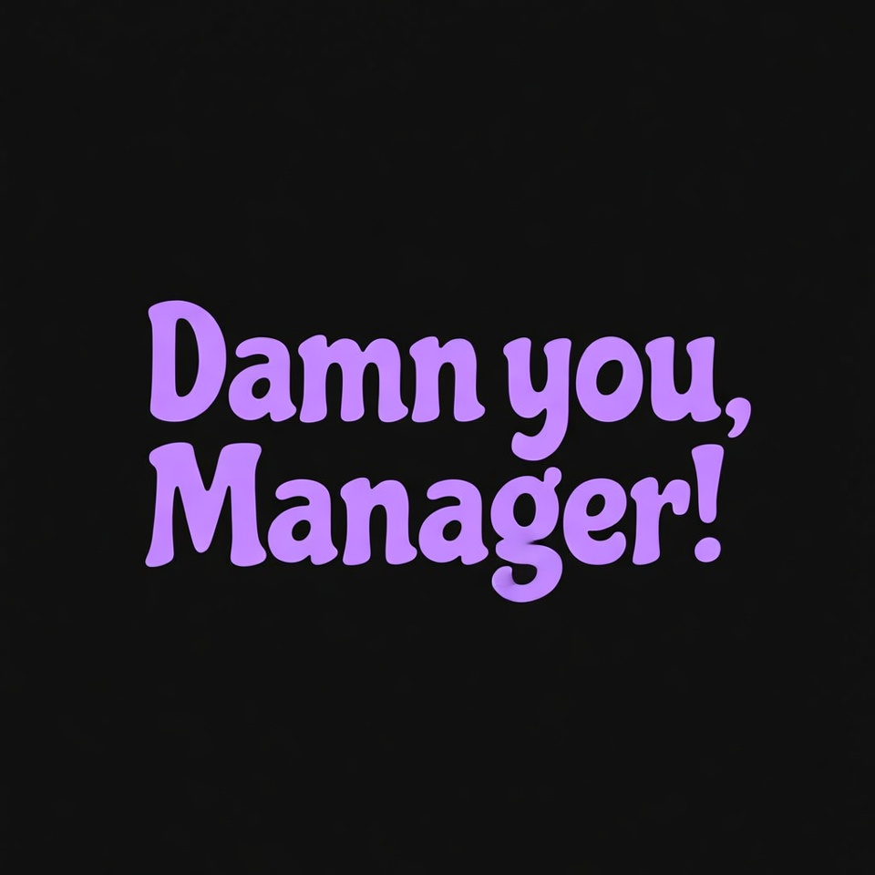
Proceed to Gallery Showcase
Visual Gallery & Environmental Design
Please review this curated selection of visual developments, architectural renders, and environmental designs across my practical projects.
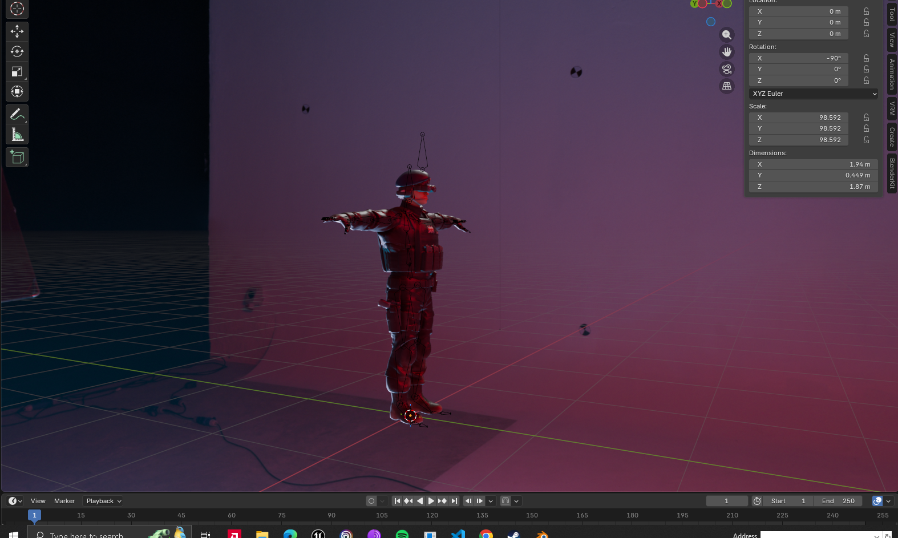
Sgt.Grayves WIP-1 [rigged]
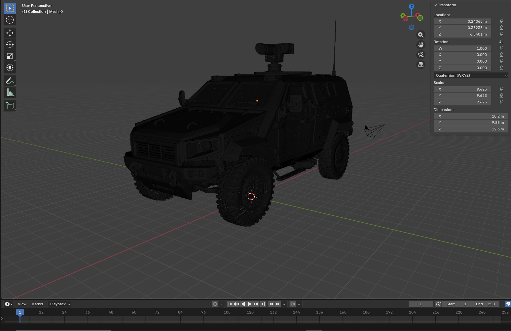
Insurgent recce-class WIP-1 [wireframe]
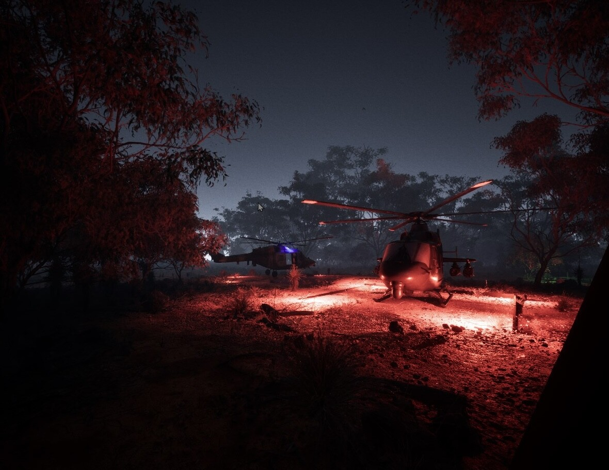
CallSignDJ (001)
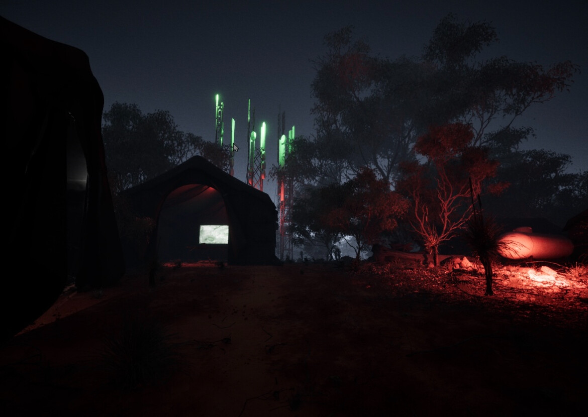
CallSignDJ (001)
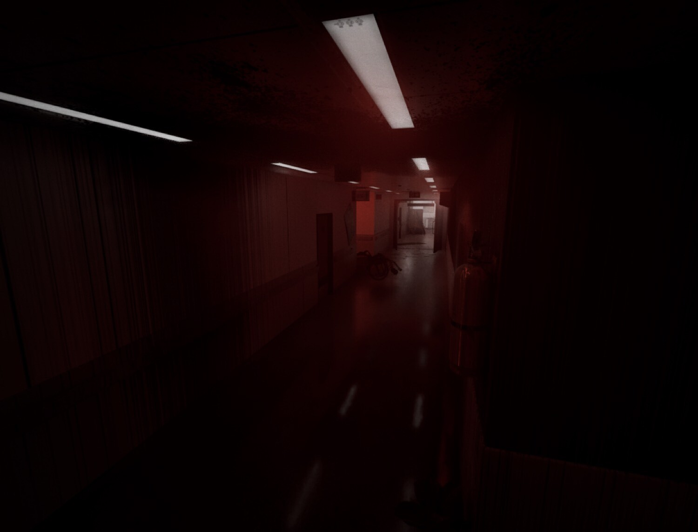
CallSignDJ (001)
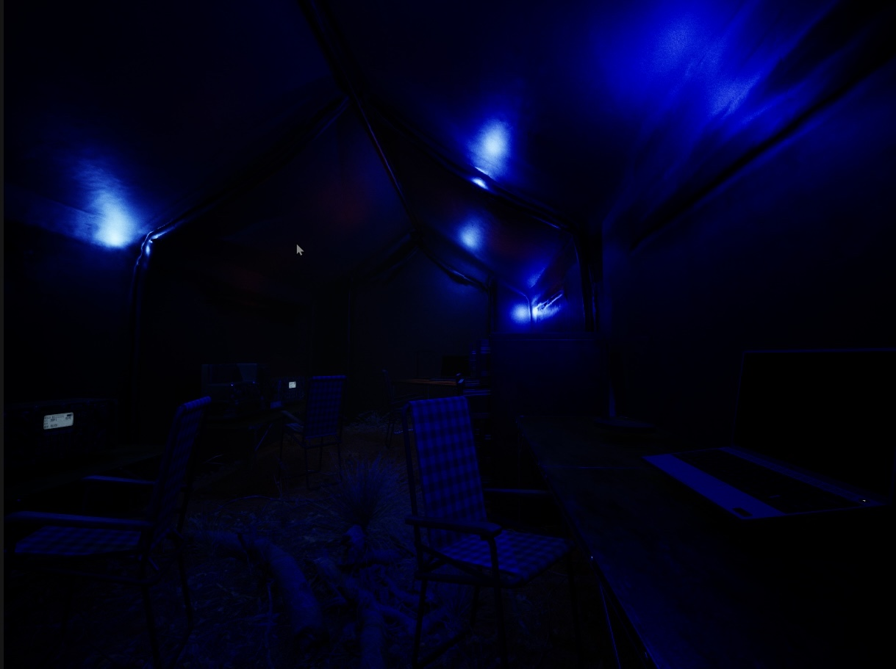
CallSignDJ (001)

Damn You, Manager!
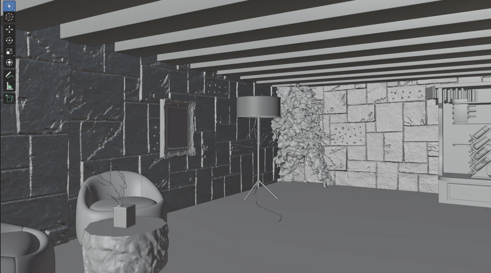
Rustic Bar WIP [solid]
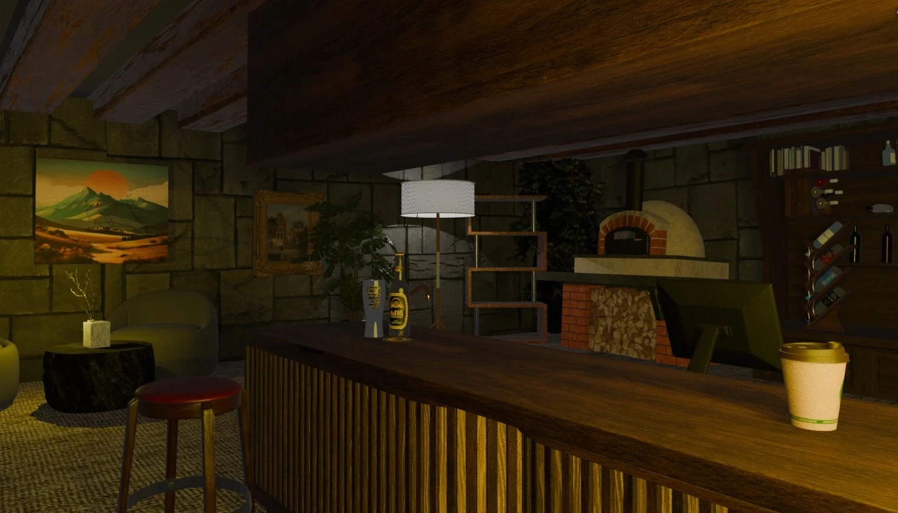
Rustic Bar 1
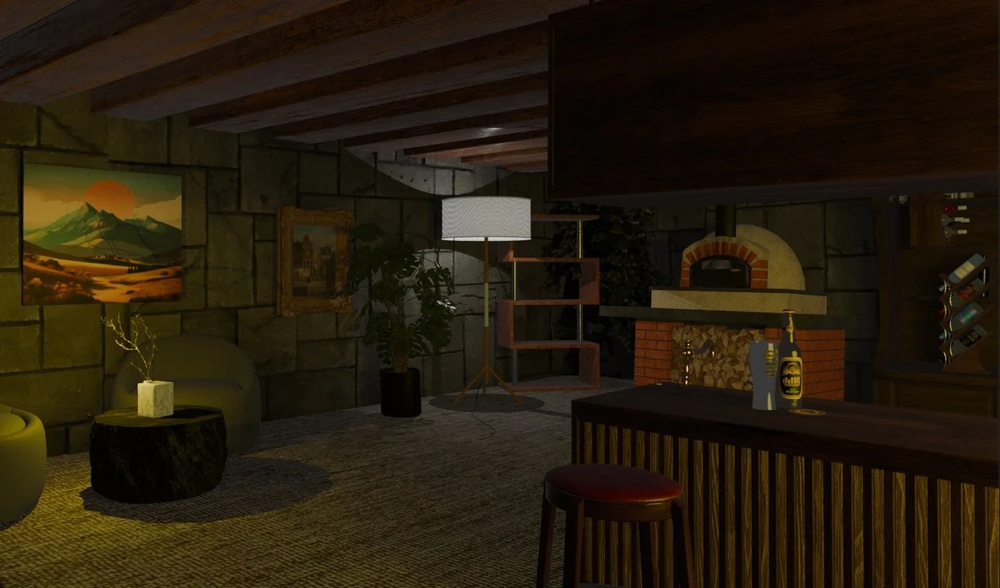
Rustic Bar 2
Bathroom
Living Room
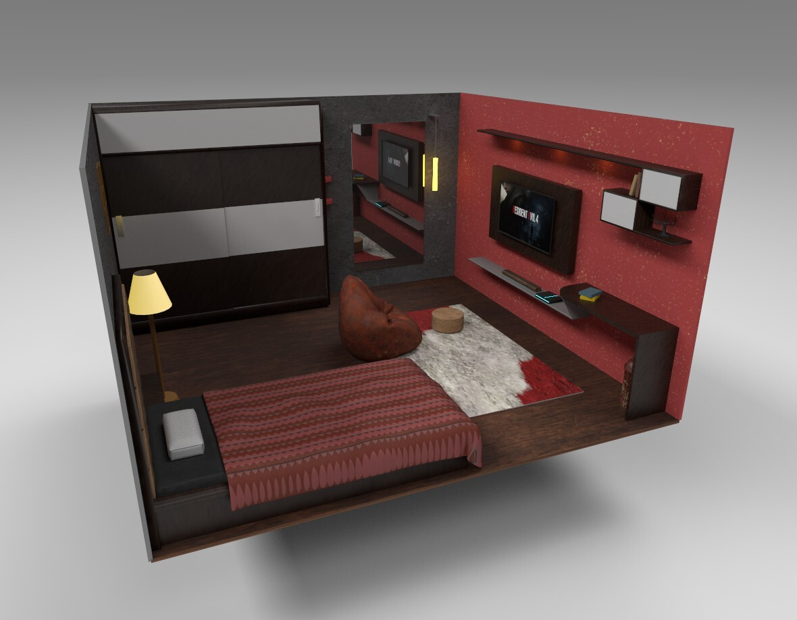
Bedroom Interior Design
Damn You, Manager!
Review Curriculum Vitae
Curriculum Vitae
Enriko Straubis
- 22-11-2009
- Hull, HU9 2JP
- (+44) 07383 88 22 83
- enrikostraubis@gmail.com
Soft Skills
- Meticulous & rigorous error checking
- Highly punctual & operationally enthusiastic
- Technically adaptable & team-oriented
- Natural leadership capabilities
- Critical problem solving
- Effective client communication
Certifications
- Microsoft C# Foundational Certification
- Harvard CS50 (Intro to Computer Science)
- Google Foundational Cybersecurity
- Johns Hopkins/Coursera Psychological First Aid
- Advanced AED & First Aid
- FSA Food Allergy & Intolerance Training
Athletics & Disciplines
- Jujitsu No-Gi (Blue Belt)
- Rugby League (Myton Warriors)
- East vs. West Hull (1x Winner, 1x Participant)
Professional Statement
A highly practical and results-driven individual characterized by a direct, industrious approach to complex tasks. Possesses a proven readiness to initiate operations promptly and seamlessly integrate into professional environments. Demonstrates intrinsic leadership capabilities and team cohesion, actively cultivated through competitive team sports. Committed to executing duties with precision, technical adaptability, and zero operational friction.
Work Experience
General Labourer & Assistant Plasterer21/11/2024 – 30/12/2025
MUD ON WALLS LTD | Hull (Part-time)
Facilitated site operations through the rigorous handling and transport of heavy materials, including plasterboard and foundational supplies. Gained direct, practical experience in core plastering techniques, ensuring high standards of physical endurance and site safety.
Detailing Technician & Customer Service20/03/2024 – 08/07/2024
Star! Car wash LTD. | Hull (Part-time)
Executed comprehensive vehicle detailing operations, including high-pressure jet washing and specialized tire degreasing. Delivered medium-to-high-level client communications, ensuring customer satisfaction while gaining practical insights into frontline business operations and service scalability.
Education
Independent Academic Study (Homeschooled)07/10/2024 – Present
Hull
Secondary Education20/09/2021 – 07/10/2024
Malet Lambert School | Hull, HU8
Proceed to Concluding Remarks
Concluding Remarks
Thank you for taking the time to review this comprehensive portfolio. I trust this documentation adequately demonstrates my technical proficiencies, analytical methodology, and practical readiness for the BTEC L2 Art & Design program at Bishop Burton College.
I remain entirely open to critical feedback, academic assessment, and any further inquiries regarding the next steps in the admissions process. Should you require immediate correspondence, my direct contact details are provided below.
(+44) 07383 88 22 83
enrikostraubis@gmail.com
For an extended look at my visual developments and higher-fidelity 3D assets, please review my external ArtStation repository:
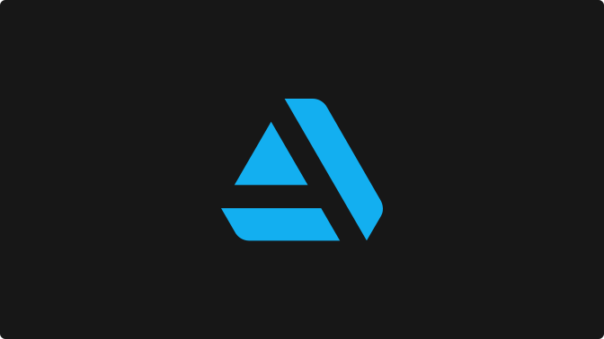
ArtStation Repository
Extended Visual Portfolio & 3D Assets